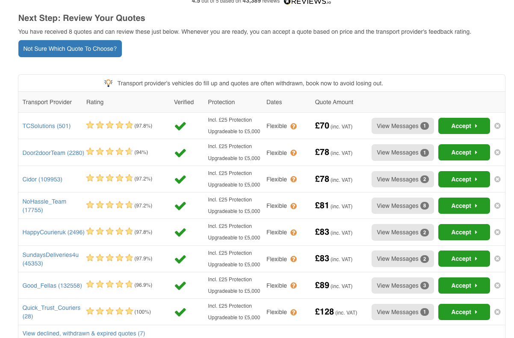
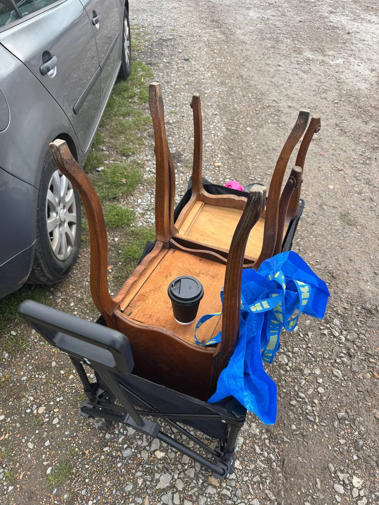
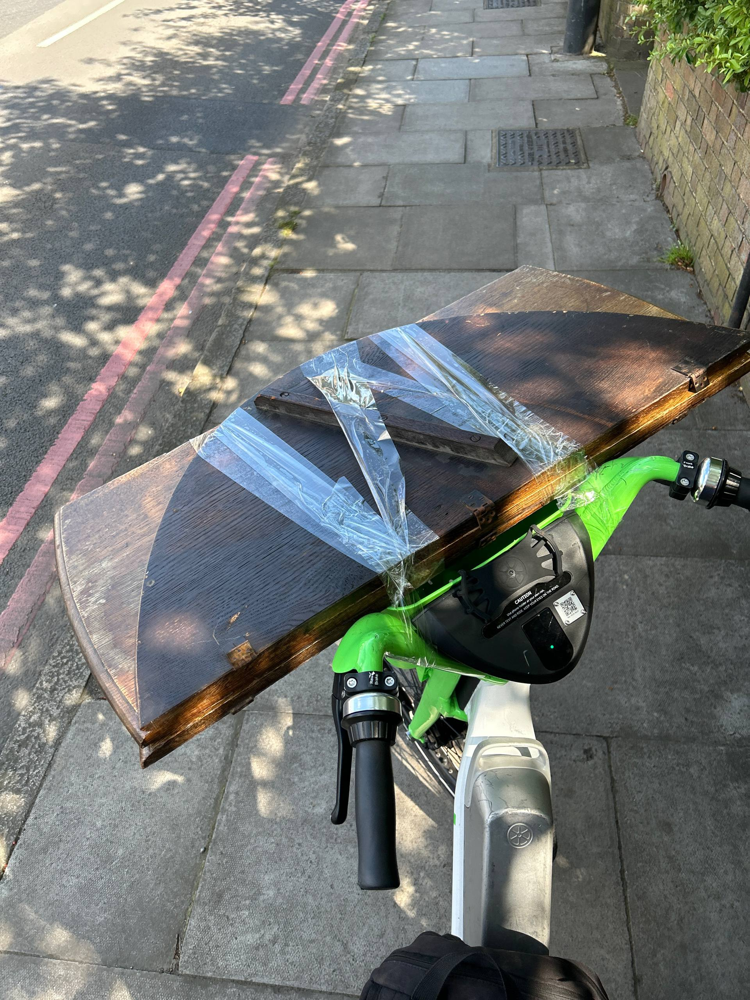
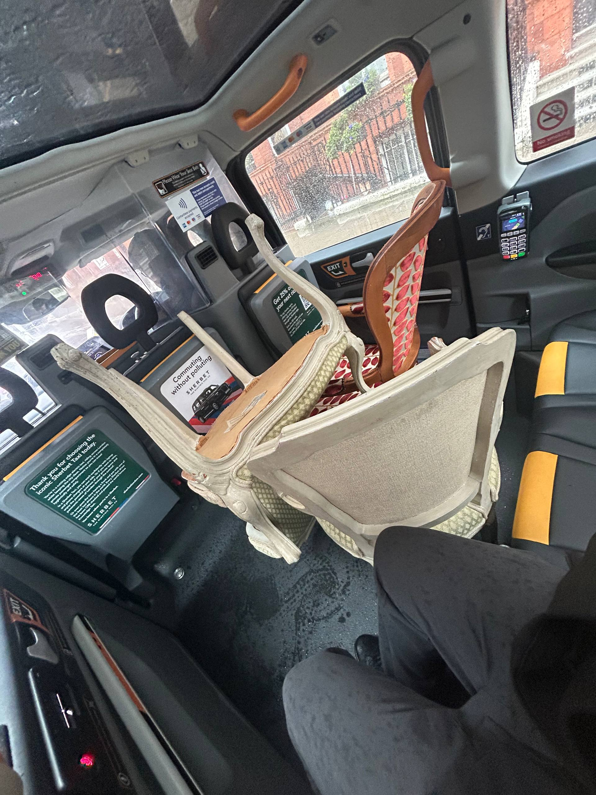

Last updated: 1 May 2026
Shiply for UK Resellers: How to Ship Furniture Cheap (2026)
Shiply lets you ship UK furniture for £40–£100 because drivers running empty van space bid against each other for the job. If you sell furniture on eBay, Vinted, or Facebook Marketplace, this is the cheapest way to get a sofa from London to Bristol or a wardrobe across Yorkshire. Properly used — with the eBay collection code workflow — it’s also one of the safer ways to do collection sales without scams.
This is a practical guide for UK resellers. Real prices, how the auction works, where it goes wrong, the AnyVan comparison, and the workflow that keeps you out of eBay Money Back Guarantee disputes.

“After we drove a car full of furniture back from France via the Eurotunnel, the next problem was getting items from London out to UK buyers. Shiply solved it — £70 for bedside tables to most of the UK, sometimes £40 if a driver’s already on the route.” — Oleksandr Prudnikov, FlipperHelper developer and active reseller
What is Shiply?
Shiply (shiply.com) is a UK-incorporated transport marketplace. Founded 2008, London-based. You post a job — item description, collection postcode, delivery postcode, photo — and drivers running existing routes nearby bid lower than standard rates because they’re filling empty van space. First quotes typically arrive within 30 minutes; the cheapest come within 24 hours.
The model is called “backloading”: a driver delivering a van of furniture from London to Plymouth has return capacity. They’ll quote £60 to take your dining table back the other way, because the alternative is driving home empty. Shiply estimates this saves up to 75% off standard rates.
Crucially, listings with photos receive 34% cheaper quotes on average per Shiply’s own data. Always include clear photos of the item plus a tape-measure shot for dimensions.
How much does Shiply actually cost? (real UK examples)
From my own Shiply bookings as a UK reseller:
- Marble bedside tables (pair, 2-man lift): London → UK delivery, 8 quotes ranging £70–£128. Picked the cheapest verified driver at £70 inc VAT
- Same job, London → Penrith, Cumbria (CA11 8HX): quotes came back £67–£95 — longer distance but a popular backload corridor kept prices similar
And from Shiply’s own published price examples:
- Antique cabinet: Bristol BS15 → Lincolnshire LN6 = £60
- Danish 3-seater sofa: London E5 → Paris 75006 = £105
- Plasma TV: London N2 → London N16 = £40
- Smeg fridge: Hampshire RG29 → Plymouth PL5 = £60
Industry estimates from comparison site DeliveryQuoteCompare put the average for large eBay items at £40–£95. Real-world UK reseller experience matches: a London-to-Bristol single piece of furniture commonly comes in around £70 — which is why £70 is the safe-ish flat-fee number to advertise on eBay if you’re going to bake shipping into the listing. Sometimes the actual quote is £40, sometimes £100. Average over many sales, you come out close.
What changes the price:
- Distance and route popularity. London-to-Bristol is a busy backload corridor — cheap. London-to-Inverness is harder — expect £150+
- Item size. A 3-seater sofa needs more van space than a side table. A wardrobe is the upper end of single-driver capacity
- Date flexibility. “Any date in the next 2 weeks” gets cheaper bids than “Saturday only”
- Two-man-carry requirement. If the item needs two people to lift or to carry up stairs, expect bids to roughly double
- Time of year. Christmas, summer holiday weekends, end of university terms (June, September) push prices up
Shiply’s fees and how they get paid
Per Shiply’s published terms (UK):
- Customer fee: 3.9–9.9% of the transaction value, tiered. Minimum £6
- Driver fee: None — drivers don’t pay subscription. Commission is taken from the customer’s deposit
- Payment flow: When you accept a bid, you pay Shiply a deposit (typically the platform fee, sometimes more). The deposit transfers to the driver’s Shiply account; Shiply debits its commission. You pay the balance directly to the driver on collection, usually card or cash
Verify VAT treatment on the fee tiers in Shiply’s current Terms Part B Section 6 if it matters to your accounting — the published tier doesn’t make VAT inclusion explicit, and similar platforms (AnyVan) charge fee + VAT on top.

The eBay collection workflow that protects you
This is the key section if you’re a reseller. The wrong workflow gets you scammed; the right one gets you paid.
Wrong workflow (avoid)
You sell a sofa on eBay with “£70 shipping”
You pay Shiply yourself, courier collects, delivers
Buyer files “item not as described”, gets a refund, keeps the sofa
You have no proof of pickup or delivery condition. eBay refunds the buyer. You lose the sofa AND the £70 shipping cost
Right workflow
Sell as Local Collection with a note: “Buyer to arrange own courier — Shiply works well, typical price £40–£100”
Buyer wins the auction, pays via eBay/PayPal
Buyer posts the eBay item ID into Shiply, gets bids, picks one
On collection day, the courier turns up with the buyer’s eBay 6-digit code or QR code
You scan or enter the code in the eBay app to mark Delivered.
This is the moment that locks down the eBay Money Back Guarantee — the platform records the handover
You hand the item to the courier. Done
Two critical rules:
- Refuse to release the item without the eBay collection code. If a courier turns up without it, the buyer hasn’t completed the eBay handshake. Tell the courier to come back with the code from the buyer
- Take a video of the item being loaded into the courier’s van — condition + courier name + plate. This is your evidence if a buyer later disputes
Shiply vs AnyVan
The two main man-and-van marketplaces in the UK.
| Feature | Shiply | AnyVan |
|---|---|---|
| Pricing model | Reverse auction (drivers bid) | Instant fixed quote, matched to driver |
| Typical price for single-item furniture | £40–£100 | Higher than Shiply for same job; price-beat pledge |
| Driver vetting | Marketplace; rating-driven | Drivers must hold ≥4.7-star Trustpilot |
| Trustpilot | 4.8/5 / ~70k reviews UK | 4.6/5 / ~174k reviews UK |
| Payment | Deposit to Shiply, balance to driver on collection | Single price, paid through AnyVan |
| Insurance | None automatic; per-driver GIT cover varies | Per-driver, but vetted |
| Speed from booking to collection | 2–7 days at cheap end; same-day possible | Faster on average; more reliable dates |
Use Shiply when you have flexible dates and want the cheapest possible price. Use AnyVan when you need a fixed price and a guaranteed date and you don’t want to manage a bidding process.


What Shiply isn’t good for — use parcel couriers instead
For smaller items, Shiply is overkill. Standard parcel couriers:
- Royal Mail Tracked 24 / Parcelforce 48 — up to 30 kg, length ≤ 1.35 m (Parcelforce 48 Large goes up to 2.25 m for £95.50). Best for boxed kitchenware, boxed lamps, smaller framed art
- DPD — 30 kg, 1 m max length. Good for smaller homewares
- Evri — 15 kg, 1.2 m max. Cheapest for Vinted-grade items
- Yodel — 10 kg, 60×50×50 cm. Smallest items only
If your item fits in any of these, use them. Shiply’s £6 minimum platform fee plus driver bid means you’ll never beat Royal Mail or Evri on small parcels.
Common Shiply pitfalls
Driver no-show
Trustpilot 1-star complaints repeatedly cite drivers not turning up after deposit was paid. Mitigations:
- Don’t accept the cheapest bid blindly. Filter by driver Trustpilot rating and review count
- Confirm collection time the day before
- If the driver no-shows, raise a Shiply dispute the same day — deposits can be refunded, but Shiply often refunds as voucher / store credit rather than cash
Damage in transit, no compensation
Shiply UK doesn’t provide automatic cover. Multiple Trustpilot 1-star complaints describe damaged items where Shiply “accepts no responsibility”.
Mitigations:
- Ask the driver for their goods-in-transit insurance certificate before booking high-value items
- Wrap fragile pieces yourself before collection — old blankets, bubble wrap. Don’t rely on the driver
- Photograph the item just before loading and just after delivery (if you’re also the buyer)
- For items above £200–£300, consider AnyVan or a specialist antique courier with explicit cover
Excessive cancellation surcharges
If you cancel after accepting a bid, Shiply may charge cancellation fees. Read the bid’s terms before clicking accept — some drivers state non-refundable holds.
Buyer never books
If you sold collection-only and the buyer hasn’t booked Shiply within 5–7 days, message them. Some buyers procrastinate; some never intended to collect (they bid too high and got buyer’s remorse). The eBay collection deadline is typically 14 days — after that you can claim the unpaid item process or relist.
Setting eBay shipping price for furniture — what works
Three patterns experienced UK sellers use:
(A) Collection only, buyer arranges Shiply
Lowest seller risk. The eBay listing says “Local Collection” with a note explaining Shiply. The narrowest buyer pool but the safest workflow. Best for high-value pieces where damage liability matters.
(B) Flat fee at the high end of likely Shiply quotes
List with “UK shipping £100” and book Shiply yourself after sale. You eat the upside if the actual quote is £45; you’re protected if it’s £95. Risk: you become the courier coordinator and absorb damage/no-show risk. Only do this if you’re comfortable losing one item per quarter to an issue.
(C) Free shipping bundled into a higher item price
Works only if you can model your average courier cost across many sales. Common for sellers shifting volume of similar-sized items where the mean Shiply cost stabilises. Don’t do this with one-off pieces.
The mistake to avoid: under-pricing the flat fee. “£40 UK shipping anywhere” on a wardrobe is going to lose you £30–£60 to Highlands, Cornwall, or two-man-carry stairs. If you don’t know the exact route until after sale, set the flat fee at the upper end of likely quotes or use Pattern A.
Frequently asked questions
How much does Shiply cost for furniture delivery in the UK?
Typically £40–£100 for a single item. Real Shiply examples: Bristol-to-Lincolnshire antique cabinet £60, London plasma TV £40, Hampshire-to-Plymouth fridge £60. Industry average for large eBay items is £40–£95.
How does the Shiply auction work?
You post the job (item, postcodes, photo). Drivers running existing routes nearby bid lower than standard rates because they’re filling empty van space. First quotes within 30 minutes; cheapest within 24 hours. Pick a bid, pay deposit, balance to driver on collection.
Is Shiply safe for eBay sellers?
Yes when used correctly. List as Local Collection, buyer books Shiply themselves, courier collects with the eBay 6-digit code or QR which you scan in the eBay app to mark Delivered. Don’t book Shiply yourself — it puts you on the hook for damage and no-shows.
Shiply vs AnyVan?
Shiply is reverse auction (cheapest bid wins). AnyVan is fixed-quote with vetted drivers (≥4.7-star Trustpilot). Shiply usually cheaper, AnyVan more reliable. Trustpilot Shiply 4.8/5, AnyVan 4.6/5.
Does Shiply offer insurance?
UK has no automatic cover. Liability sits with the driver’s own goods-in-transit insurance, which varies. Shiply’s US Protection Plan covers up to $5,000; no UK equivalent. Treat as uninsured by default.
What about smaller items — should I still use Shiply?
No — for items under 30 kg / 1.35 m use Royal Mail or Parcelforce 48. Under 15 kg use Evri. Shiply’s £6 minimum platform fee plus driver bid means it’s never the cheapest option for small parcels.
Can I cancel a Shiply booking?
Yes but you may incur a cancellation fee. Read the bid’s terms before clicking accept — some drivers state non-refundable holds. Best practice: only accept bids when you’re ready to commit.
How long does Shiply take to collect?
Same-day is possible if a driver happens to be on a route through your postcode that day. Realistic norm: 2–7 days at the cheap end. If you need a guaranteed date, pay more or use AnyVan.
Related reading
- How to Sell on eBay UK — the full eBay UK seller workflow
- Best Items to Resell in the UK — what sells and what to avoid
- How to Track Reselling Profits — logging shipping costs against item profit
- Best UK Online Auction Sites for Resellers — sourcing furniture by online auction
Track shipping costs with FlipperHelper
Free app for iOS and Android. Log Shiply quotes as transport expenses against each sold item. See your real profit per sale — not the misleading sale-price-only number. Works offline so you can update on the go.
Download Free on the App StoreGet it Free on Google Play